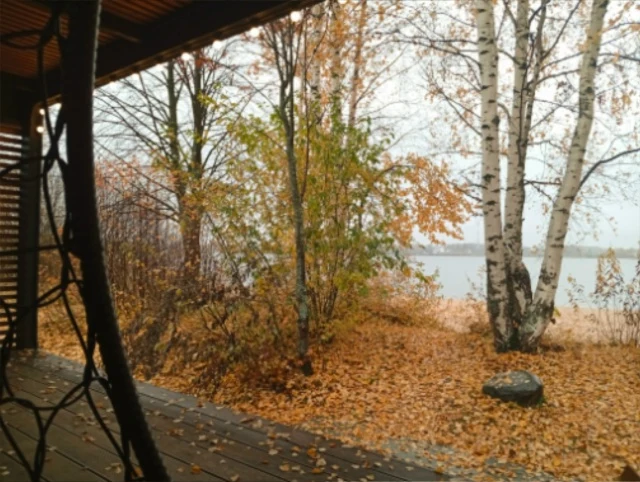

Хаски на воротах
Отдельная поверхностьДва хаски на воротах дачного участка. На фотографии — рядом с настоящей собакой.
Ярославль и область
Художественная роспись фасадов, интерьеров и отдельных поверхностей. Сюжет, который подходит именно вашему пространству.
История одной росписи
На территории шло благоустройство. Григорий предложил расписать старую постройку осенним пейзажем, чтобы она вписалась в окружающее пространство.
Рисунок связывает две стороны постройки
Рядом обустраивали общественное пространство: появились спортплощадка и каток. Старое строение нужно было сделать приятнее на вид.
Григорий предложил пейзаж. Вместе с администрацией села остановились на осенних берёзах: такой рисунок перекликается с природой вокруг.
На двух стенах появилась берёзовая роща с рекой и дальним берегом. Рисунок огибает угол, и фасады воспринимаются как одна картина.
Осенние краски продолжаются за пределами рисунка. Пейзаж связывает постройку с местом, для которого её расписали.
Брейтовский край, фотография из поездки художника

Рисунок может занять целый фасад, ворота или стены веранды. Вот ещё две работы Григория.
Два хаски на воротах дачного участка. На фотографии — рядом с настоящей собакой.
Персонажи «Барбоскиных» и яркие цвета на стенах детской веранды.
Выберите поверхность. В запросе можно описать место и идею, даже если готового сюжета пока нет.
Перед обсуждением
Фотографию стены целиком, примерные ширину и высоту, город или населённый пункт. Если есть идея сюжета или понравившийся пример, добавьте их к обращению.
Да. Опишите, что хотите изменить и какое настроение создать. Фотографии пространства помогут начать разговор о подходящем сюжете.
Для оценки важны размеры, сложность сюжета, состояние поверхности, местоположение и доступ к стене. Стоимость и сроки конкретной работы обсуждаются с художником.
Сначала нужно оценить её состояние. Роспись меняет внешний вид, но не устраняет разрушение поверхности. Необходимую подготовку и возможность нанесения рисунка обсуждают до работы.
Григорий Сидяков
Расскажите о стене, которую хотите расписать. Начать можно с фотографии и нескольких слов о своей идее.
Роспись стен и фасадов
в Ярославле и области